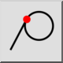
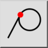
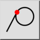
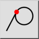

Tangential
Werkzeugleiste / Symbol:
 

Menü: Fang > Tangential
Tastenkürzel: S, B
Kommandos: snaptangential | sb
Werkzeugleiste / Symbol:
 

Menü: Fang > Tangential
Tastenkürzel: S, B
Kommandos: snaptangential | sb
Fängt den Berührpunkt zu Bögen, Kreisen und Ellipsen. Dies gilt nur beim Zeichnen von Linien. Der Fangpunkt ist der Tangentenpunkt einer imaginären Linie vom relativen Nullpunkt, tangential zum angeklickten Bogen oder Kreis.